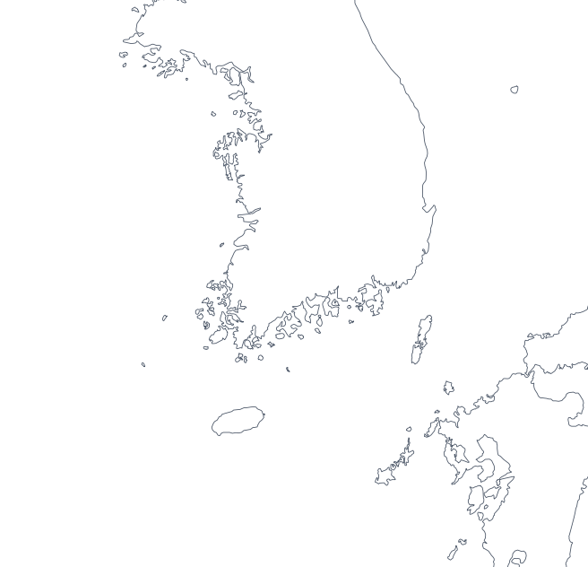
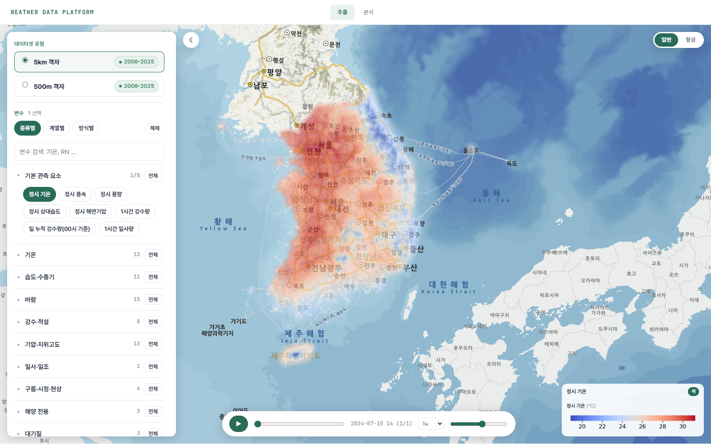
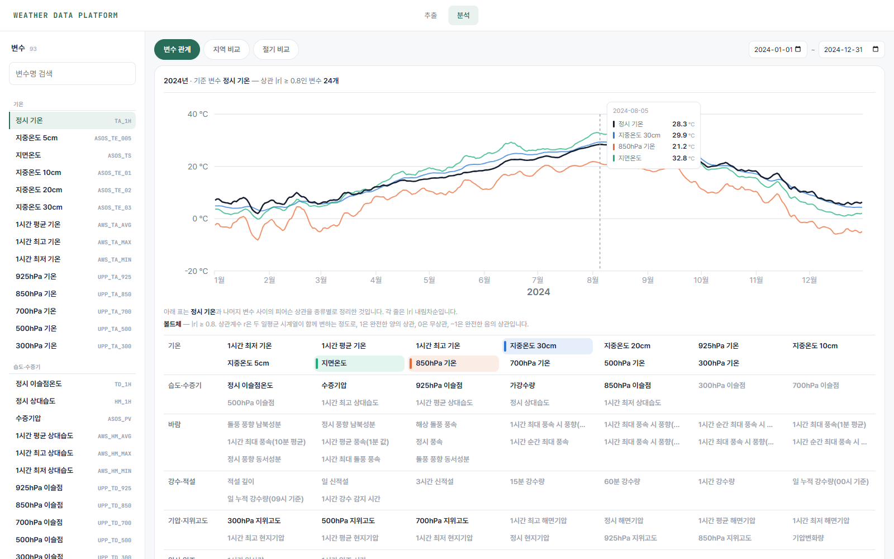
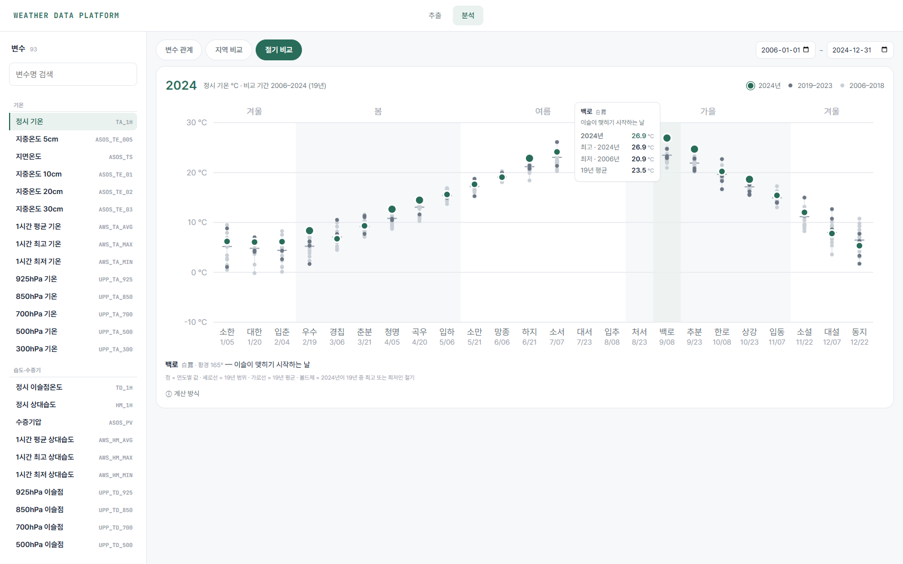
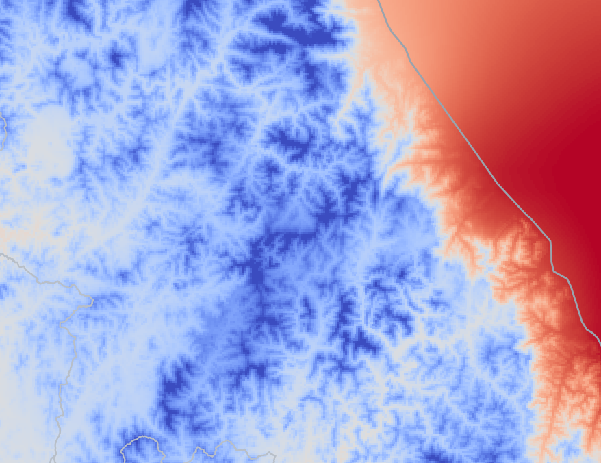
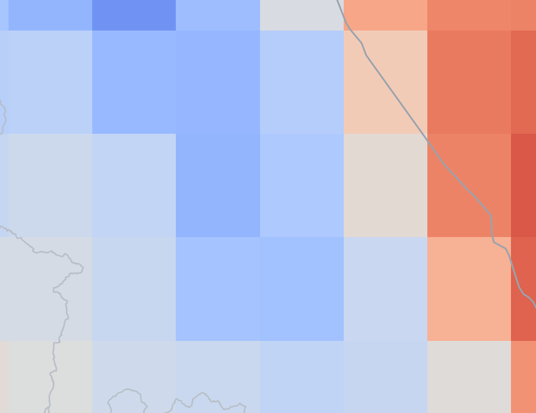
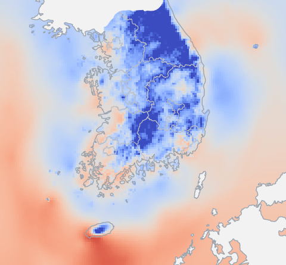
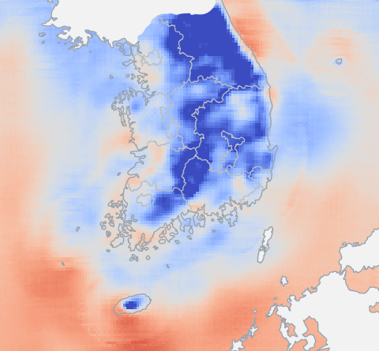

대한민국 국지 기상을 반영한 관측 기반 다차원 기상 데이터 플랫폼
Journal of the Korean Institute of Communications and Information Sciences (submitted)

KOBRA 5 km 데이터셋의 2024년 7월 15일(KST) 1시간 단위 값으로, 지도에 마우스를 올리면 의 값·좌표·시각을 볼 수 있다(빈칸은 데이터셋에서 비어 있는 격자).
딥러닝 기상 예측 모델의 성능은 학습 데이터에 좌우되며, 국지 위험기상을 예측하려면 국지 기상을 담은 학습 데이터가 필요하다. 그러나 주로 사용되는 데이터 는 위경도 0.25°의 공간 해상도로 제공되어, 산지와 해안이 좁은 영역에 분포한 대한민국의 국지 기상을 표현하기 어렵다. 국내에서도 국지 기상 정보를 담은 데이터셋을 구축하려는 연구가 수행되었으나, 각 연구가 필요한 변수만으로 데이터셋을 개별 구축하여 변수·기간·보간 방법이 일관되지 않아 재사용과 결과 비교가 어렵다. 본 논문은 기상청의 지상·해양·고층 관측을 관측 지점 수, 기상 변수의 특성, 지형의 영향에 따라 서로 다른 보간 방법으로 격자화하여 2006~2025년의 5 km·500 m, 1시간 단위 104채널 다차원 데이터셋을 구축하고, 이를 필요한 범위만 추출할 수 있는 관측 기반 대한민국 기상 데이터 플랫폼 KOBRA(Korean Observation-Based Regional Atmospheric data platform)로 제공한다. , ERA5와의 비교, 딥러닝 학습 실험을 통해 구축한 데이터셋이 관측소가 없는 위치의 값을 정확하게 추정하고, ERA5가 표현하지 못한 산지의 기온 차이를 나타내며, 별도의 전처리 없이 딥러닝 학습에 활용될 수 있음을 확인했다. KOBRA는 일관된 기준으로 구축된 관측 기반 데이터로 대한민국의 국지 기상을 연구할 수 있는 공통 기반을 제공하며, 새로운 변수와 관측으로 확장할 수 있다.
본 논문은 기상청의 지상·해양·고층 관측 데이터를 수집하여 데이터셋으로 구축하고 이를 플랫폼 형태로 제공하는 관측 기반 대한민국 기상 데이터 플랫폼 KOBRA(Korean Observation-Based Regional Atmospheric data platform)를 제안한다. KOBRA는 관측의 수집부터 까지를 하나의 체계로 정의하며, 이 체계로 2006~2025년의 관측을 기상 변수의 특성에 맞게 공간 보간하여 5 km와 500 m 공간 해상도, 1시간 단위의 다차원 데이터셋을 구축한다. 구축한 데이터셋은 k-fold 교차검증으로 정확도를 평가하고, ERA5와 비교하여 국지 기상의 표현을 확인하며, 딥러닝 모델의 학습 실험으로 학습 데이터로서의 실용성을 검증한다.
단계를 누르거나 마우스를 올리면 그 단계가 강조되고, 아래에 세부 내용과 관련 절로 가는 링크가 나온다
Figure 1. KOBRA의 데이터 파이프라인과 검증 실험 개요: (1) 관측 수집, (2) 데이터셋 구축, (3) 저장, (4) 추출, (5) 검증·활용
기상청 API를 통해 2006년부터 2025년까지의 지상·해양·고층 관측 데이터를 수집하고(Table 1), 결측과 측정 오류로 물리적으로 나타날 수 없는 값을 제외했다. 관측소는 시기에 따라 새로 설치되거나 폐지되므로, Figure 2는 2024년에 관측이 있었던 관측소를 기준으로 나타냈다. 수집한 관측은 관측 지점 수, 각 기상 변수의 특성, 지형의 영향에 따라 변수마다 보간 방법을 달리하여 경도 약 122.7~132.1°, 위도 약 31.5~38.7°의 영역에 매 시각 격자화했으며, 지상·해양 관측의 변수 73채널과 고층 관측의 기압면별 변수 31채널, 총 104채널의 데이터셋을 구축했다.
관측 종류 버튼으로 점을 켜고 끄고 관측 카드를 펼치면 그 관측망만 강조되며, 점을 가리키거나 누르면 지점 정보가 나온다. +/− 버튼·Ctrl+휠·두 손가락으로 확대하고 끌어서 옮긴다 (지도에서 ←→ 키로 지점 이동)
Figure 2. 수집한 관측소의 분포 현황: (a) 지상·해양 관측소, (b) 고층 관측소
Table 1. 수집한 기상청 관측의 종류별 생성 주기와 지점 수
| 관측 종류 | 생성 주기 | 지점 수 | |
|---|---|---|---|
| 지상관측 | 종관기상관측 | 1시간 | 93 |
| 방재기상관측 | 1시간 | 663 | |
| 황사관측 | 1시간 | 29 | |
| 해양 | 부이·등표 | 1시간 | 67 |
| 고층 | 라디오존데 | 6시간 | 10 |
관측값은 관측소가 위치한 지점에서만 얻어지므로, 미관측 지점의 값은 주변 관측값으로부터 추정해야 한다. 본 연구는 공간 보간에 을 적용했으나, 크리깅은 관측 지점 사이의 거리에 따른 값의 차이로 가중치를 정하므로 변수의 관측 지점 수와 기상 변수의 특성에 따라 그대로 적용할 수 없는 경우가 있다. 이에 변수를 관측 지점 수, 각 기상 변수의 특성, 지형의 영향에 따라 나누어 다음과 같이 보간했으며, 이 방법에 따라 매 시각 보간을 수행하여 데이터셋을 구축했다.
데이터셋은 지상·해양 관측의 변수 73채널, 고층 관측의 기압면별 변수 31채널 등 총 104채널로 구성된다.
묶음을 누르면 채널 이름과 코드가 나온다 (KOBRA 채널 명세 기준)
데이터셋은 20년 동안의 104채널을 1시간 단위로 담고 있으며 연구마다 필요한 변수·기간·영역이 다르므로, 사용자가 필요한 범위만 지정하여 추출하는 웹 플랫폼으로 제공한다. 사용자는 데이터셋·변수·기간·영역을 지정하고 지도에서 분포를 확인한 뒤 파일을 내려받거나 같은 조건을 API로 요청하며(Figure 6), 분석 화면에서 변수 사이의 상관과 24절기별·행정구역별 분포를 확인하여 추출할 변수와 기간을 정할 수 있다(Figure 8).
번호에 마우스를 올리거나 누르면 항목 이름이 나온다. 화면을 누르면 크게 볼 수 있다



Figure 6. KOBRA의 데이터 조회·추출 화면: (a) 전체 화면(① 데이터셋 선택, ② 변수 선택, ③ 격자 지도, ④ 지점 값 조회, ⑤ 표시 변수 설정, ⑥ 색상 범례, ⑦ 시간 탐색), (b) 추출 조건 패널(⑧ 기간 선택, ⑨ 지역 선택, ⑩ 추출 실행)
이 실험은 관측소가 없는 위치에서 구축 데이터셋이 값을 얼마나 정확하게 추정하는지를 변수별로 확인한다.
구축한 데이터셋의 격자 값은 대부분 미관측 지점에서 추정한 것이므로, 관측소를 다섯 묶음으로 나누어 하나씩 돌아가며 제외하고 다시 구축한 격자의 값을 그 위치의 관측값과 비교하는 k-fold 교차검증(k=5)으로 정확도를 평가했다. 구축 데이터셋의 는 네 변수 모두 최근접 이웃법보다 낮았고, 기온은 1.41 °C로 역거리 가중법의 1.57 °C보다 10% 낮았다. 제외하는 관측소의 비율을 1%부터 30%까지 바꾸어도 기온의 평균제곱근오차는 1.53~1.63 °C에 머물렀다.
Figure 10. 관측소 분포 밀도에 따른 공간 보간 기법별 평균제곱근오차: (a) 기온, (b) 상대습도, (c) 풍속, (d) 1시간 강수
Table 2. k-fold 교차검증(k=5)을 통한 공간 보간 기법별 추정 오차
| 변수 | 평가 지표 | KOBRA | IDW | Nearest neighbor |
|---|---|---|---|---|
| 기온(°C) | RMSE | 1.41 | 1.57 | 1.97 |
| 0.98 | 1.08 | 1.33 | ||
| 상대습도(%p) | RMSE | 8.58 | 8.54 | 10.79 |
| MAE | 6.00 | 6.06 | 7.48 | |
| 풍속(m/s) | RMSE | 1.46 | 1.43 | 1.81 |
| MAE | 0.95 | 0.96 | 1.20 | |
| 1시간 강수(mm) | RMSE | 0.86 | 0.81 | 0.97 |
| MAE | 0.10 | 0.10 | 0.12 |
이 실험은 ERA5의 한 격자 안에서 평균되는 산지와 해안의 기온 차이를 구축 데이터셋이 관측대로 나타내는지 확인한다.
ERA5는 공간 해상도가 0.25°이므로 하나의 격자 안에 산지와 해안이 함께 포함되며, 두 지역의 기온이 달라도 하나의 값으로 나타난다. 2023년 1월 25일 15시 태백산맥 일대에서 구축 데이터셋은 능선의 저온과 동해안의 고온을 지형을 따라 구분했으며, 이 일대 관측소 5곳을 제외하고 다시 구축한 값으로도 ERA5에서 모두 −6.9 °C였던 평창, 대관령, 성산의 기온을 구분했다(Table 3). 전국의 관측소를 해발고도 구간으로 나누어 비교하면, 900 m 이상에서 기온의 평균제곱근오차는 ERA5가 6.89 °C, 구축 데이터셋이 3.85 °C였다(Figure 12).
가운데 손잡이를 좌우로 끌어 ERA5(왼쪽)와 KOBRA 500 m(오른쪽)를 비교할 수 있다
(a)


(b)
Figure 11. 태백산맥 일대의 ERA5와 KOBRA 기온 비교: (a) 두 데이터셋의 영역별 기온 시각화, (b) 산맥 횡단면의 고도에 따른 데이터셋 기온과 관측소 기온 비교
Table 3. 태백산맥 일대 관측소의 관측값과 ERA5·KOBRA 기온 비교(°C)
| 구분 | 홍천 | 서석 | 평창 | 대관령 | 성산 | MAE | RMSE |
|---|---|---|---|---|---|---|---|
| 관측 | −7.5 | −9.7 | −10.8 | −10.4 | −6.5 | – | – |
| ERA5 | −8.4 | −10.3 | −6.9 | −6.9 | −6.9 | 1.86 | 2.42 |
| KOBRA (Ours) | −8.1 | −9.3 | −9.3 | −8.5 | −5.4 | 1.12 | 1.26 |
Figure 12. 해발고도에 따른 ERA5와 KOBRA의 기온 평균제곱근오차
이 실험은 구축 데이터셋을 별도의 가공 없이 딥러닝 모델의 학습 데이터로 활용할 수 있는지 확인한다.
플랫폼에서 추출한 5 km 데이터셋을 별도의 전처리 없이 사용하여, 과거 6시간의 기상 변수와 해발고도로 1~6시간 후의 기온, 풍속, 1시간 강수를 예측하는 을 2020~2023년으로 학습했다. 학습에 사용하지 않은 2025년을 지상 관측소의 관측값으로 평가한 결과, 기온과 1시간 강수는 모든 에서 U-Net의 오차가 가장 낮았고 기온의 6시간 예측 오차는 2.27 °C로 의 4.62 °C보다 51% 낮았다. 풍속은 1~2시간 예측에서 지속성 예측의 오차가 더 작았고, 3시간 예측부터 U-Net이 가장 정확했다.
2025년 9월 11일 09시에 시작한 기온 예측 사례이다. 재생 버튼이나 슬라이더로 예측 시간을 바꿀 수 있다
(a) Ground truth

(b) U-Net prediction

Figure 13. KOBRA 데이터셋으로 학습한 U-Net의 1~6시간 기온 예측: (a) 실제값, (b) 예측값
Table 5. 관측소 관측값으로 평가한 예측 시간별 평균제곱근오차: U-Net, 지속성 예측,
| 변수 | 예측 시간 | U-Net | Persistence | Climatology |
|---|---|---|---|---|
| 기온(°C) | 1 h | 1.32 | 1.54 | 3.86 |
| 2 h | 1.49 | 2.64 | 3.95 | |
| 3 h | 1.69 | 3.47 | 4.08 | |
| 4 h | 1.88 | 4.06 | 4.17 | |
| 5 h | 2.08 | 4.44 | 4.24 | |
| 6 h | 2.27 | 4.62 | 4.28 | |
| 풍속(m/s) | 1 h | 1.16 | 0.93 | 1.57 |
| 2 h | 1.23 | 1.19 | 1.58 | |
| 3 h | 1.29 | 1.38 | 1.58 | |
| 4 h | 1.35 | 1.53 | 1.58 | |
| 5 h | 1.40 | 1.63 | 1.58 | |
| 6 h | 1.44 | 1.69 | 1.58 | |
| 1시간 강수(mm) | 1 h | 0.92 | 1.06 | 1.08 |
| 2 h | 1.03 | 1.29 | 1.15 | |
| 3 h | 1.15 | 1.41 | 1.23 | |
| 4 h | 1.19 | 1.47 | 1.23 | |
| 5 h | 1.23 | 1.52 | 1.26 | |
| 6 h | 1.28 | 1.60 | 1.29 |
본 논문은 기상청의 지상·해양·고층 관측을 변수의 특성에 맞게 보간하여 2006~2025년 1시간 단위의 5 km·500 m 격자 데이터셋으로 구축하고, 이 데이터셋을 필요한 범위만 추출하여 사용할 수 있도록 플랫폼 KOBRA를 제안했다. 세 가지 실험에서 구축 데이터셋은 관측소가 없는 위치에서도 정확했고, ERA5의 격자 안에서 평균되는 국지 기상을 담고 있었으며, 별도의 전처리 없이 딥러닝 모델의 학습 데이터로 활용할 수 있었다. 향후에는 같은 절차로 다른 공간 해상도의 데이터셋을 구축하고, 위성·레이더처럼 격자로 제공되는 관측을 같은 체계에 추가하여 멀티모달 학습으로 활용을 확장할 계획이다. 전체 내용은 논문 PDF에서 볼 수 있다.